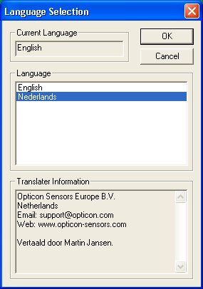

| Description |

By using the language selection dialog a new language can be selected for the NetO32 application. New language dll's can be added to the language sub folder of the NetO32 application. A copy of the translator kit can be requested at support@opticon.com. For the translator kit Visual C++ is needed. |